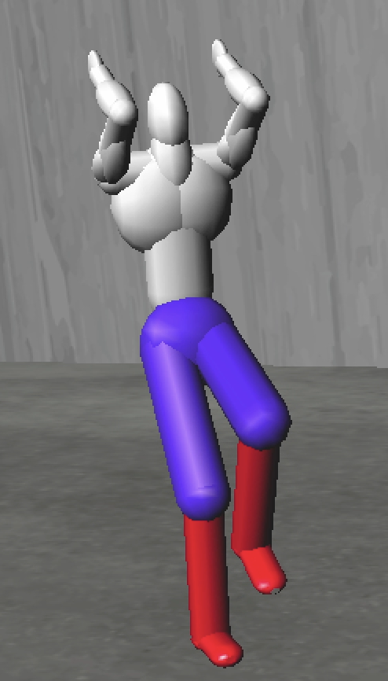

Interpolation::Sample
Linear Interpolation:
The linear Interpolation can be done according to formula:
Catmull-Rom:
The Catmull-Rom interpolation can be done according to formula:
Uniform Cubic B-Splines:
The Uniform Cubic B-Splines interpolation can be done according to formula:
|
|
|
Rotation by Quaternion + Linear Sampling |
Rotation by Quaternion + Uniform Catmull-Rom Sampling | Rotation by Quaternion + Uniform Cubic B-Splines Sampling |
Rotation
EulerRotationParameter::operator():
We can convert the Euler angle to rotation matrix by the following formula:
|
Rotation by Euler Angels + Linear Sampling |
As we can see in the animation, although using Euler angles guarantees that the in-between transformations are rotations, they can result in unwanted artifacts such as jiggling of the runner's legs.
QuaternionRotationParameter::operator():
We can convert the quaternion to rotation matrix by the following formula:
|
Rotation by Quaternion + Linear Sampling |
Matrix::closestRotation():
We can find the closest rotation matrix by using the SVD decomposition, and setting the diagonal matrix to identity matrix except the last element to be det(U * V).
|
Rotation by the closest rotation matrix + Linear Sampling |
Matrix::Exp():
We used the taylor expansion to calculate the exponential of a matrix. The formula is shown below:
|
Rotation by Skew-Symmetric Matrices + Linear Sampling |
Custom Animation:
Run ./Assignment4 --in xzhan227_HTML/rays/animation.ray --parameter 4 --interpolant 3, to check out the animation I created.
|
Art Conetest:
Run ./Assignment4 --in xzhan227_HTML/rays/art.ray --parameter 4 --interpolant 3, to see the art contest.
|
|  |
| Picture |